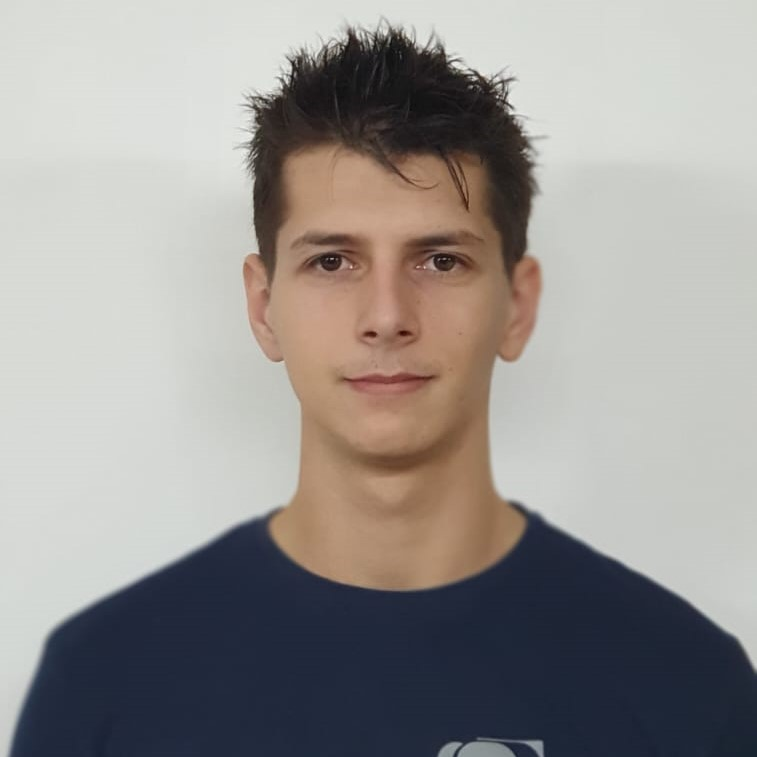

My Resume

Lukas Mazan
Summary
I live in Zlatar with my father and stepmother, brothers and sister - I have
five brothers. After matura exams, I entered the Faculty of Organization and Informatics in
Varaždin. After three months of successfully mastering the materials given to me I
passed all colloquiums. I had to interrupt my studies for
sudden illness in the family, and bad financial situations. After some time has passed
I have been provided with an opportunity of learning MVC at "Privte University Algebra" and
I had successfully finished the program. Right now I am employed as a truck driver importing
cars from Germany. I would like to change that as soon as possible so that I can
fulfill my lifelong wish of becoming a developer.
Education
- Private University Algebra
- Lenght: 20.03.2023 - 15.11.2023
- Name of qualification achieved: ASP.NET Developer
- High School Konjščina
- Lenght: 2017. - 2021.
- Name of qualification achieved: Technician for electrical machines with
applied computing
- Primary School Ante Kovačića Zlatar
Work Experience
- System technician at AHELOS.d.o.o
- Electrician at Elektro-Pozaić
- Internship (from 21.06.2020 to 12.07.2020) in Germany with
Erasmus+ project - making a smart home (Smart Home).
- Carrying out practice for each individual school year for a duration of 2 weeks or more.
Skills
- Foreign languages:
- English ⭐️⭐️⭐️⭐️⭐️
- German ⭐️⭐️
- Technical skills and competencies:
- HTML
- C#
- .NET
- MVC
- Visual Studio
- SQL
- GitHub
- Microsoft Office
- Adobe Photoshop
- Adobe Illustrator
- Adobe After Effects
- Unity
- Blender
and more....
- Driving licenses: